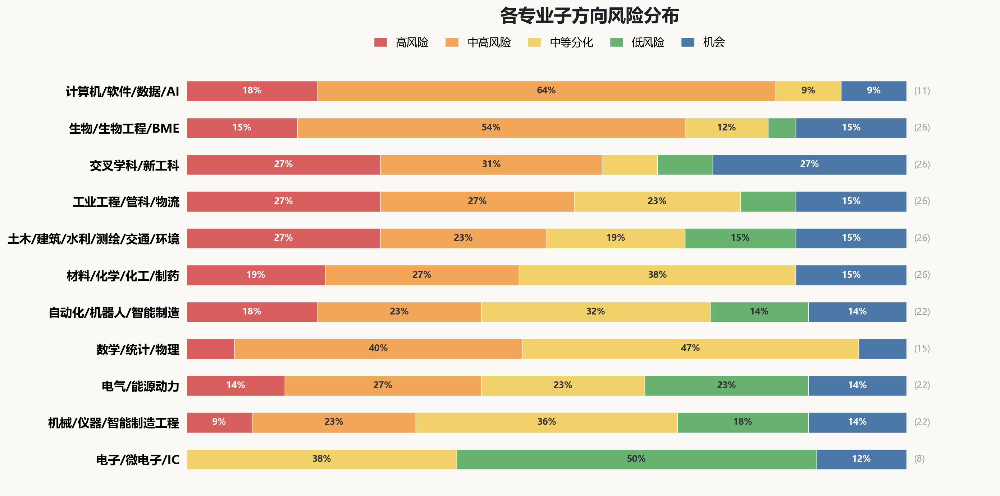

应用后端 / 全栈业务开发
高普通业务代码仍有需求，但低复杂度增删改查、接口粘合和页面配套会最先被压缩。
- 典型岗位
- Java/Go 后端、全栈、企业应用开发。
- 危险入口
- 增删改查接口、脚手架、API 封装、简单 bug 修补。
- 更稳能力
- 线上系统、事务一致性、压测限流、灰度发布和事故复盘。
- 适合人群
- 愿意承担系统稳定性和业务复杂度的人。
为高考家长、大学本科、研究生三类决策者拆解入行路径预警——核心问题不是"AI 会不会替代某专业"，而是"到我毕业那一年，这个专业的入门岗位还剩什么"。
每一行 = 一个专业大类内全部子方向按风险等级的占比。红 + 橙占比越大，说明这个大类的入门岗位被 AI 加速得越多；绿 + 蓝占比越大，说明现场、物理、政策约束让替代更慢。

下表用五个颜色表达"入门任务"的相对压缩强度。请记住：颜色描述的是任务被 AI 渗透的程度，而不是"会失业的概率"。
这张矩阵不是给所有人看同一个答案。请先定位自己处于哪个时间窗口，再回到主矩阵看对应那列。
代码、测试、报表、文档、常规建模越多，入口岗位越先被压缩。
硬件、实验、设备、法规、安全、现场交付会减慢直接替代。
高考不是看 2026 热度，而是看 2030 的入门岗位还剩什么。
表格在手机上可左右滑动
| 大陆专业入口 | 2026 高考选专业 看 2030 |
2026/2027 考研 看 2029 |
本科在读转向 看 2027-2028 |
读博/科研路线 看 2031+ |
|---|---|---|---|---|
| 计算机类/软件工程/数据科学/人工智能CS / Software / Data Science / AI查看子方向27101 | 高简单业务开发减少 做常规功能、改小 bug、拼接口的机会会减少。 |
高业务开发学历溢价降 只读研再写业务代码，竞争力变薄。 |
高实习要能交付系统 会用 AI 做完整项目的人更占优。 |
中高博士需做平台难题 价值来自系统、数据、评测和研究平台。 |
| 数学类/统计学类/物理学类Math / Statistics / Physics查看子方向16701 | 中高推导/报告被自动化 解题、代码和解释文字会被快速增强。 |
中高纯模型难换岗位 没有业务或实验数据，模型能力难落地。 |
中高转向要接真实数据 实习需落到金融、制造、能源等系统。 |
中实验/数据决定上限 有仪器、样本或独占数据更稳。 |
| 电子信息类/微电子/集成电路ECE / EE / Microelectronics / IC查看子方向00341 | 中只写测试脚本会变窄 仿真、测试说明和批量脚本更容易被工具替代。 |
中系统/工艺拉开差距 验证、模拟、器件和量产经验更值钱。 |
中高仿真文档最易压缩 只会跑脚本和写测试说明，入口变窄。 |
机会架构/工艺/工具链有机会 长期机会在系统架构、先进工艺和 EDA。 |
| 电气类/能源动力类Electrical / Power & Energy⚠️ 主格"低"仅指有签责的现场岗（继保/高压/检测）；22 个子方向里 3 个高 + 6 个中高，电力数字化/储能/碳管理压力大，务必展开看细分。查看子方向36553 | 低用电增长托底 电气化、储能和算力带来长期工程量。 |
低现场安全调试更稳 接入电网、保护设备和安全签字不能只靠 AI 完成。 |
中计算报告被工具化 潮流、方案比较和报告会交给软件。 |
机会电网/储能长期扩张 机会在新型电力系统和电力电子。 |
| 自动化类/机器人工程/智能制造Control / Robotics / Automation查看子方向45733 | 中高仿真/看板先压缩 纯演示不够，要接设备、传感器和产线。 |
中控制必须过实机 算法要通过稳定性、安全和现场闭环。 |
中高别只做演示项目 实习要有设备调试、现场验收或故障复盘。 |
机会机器人要进场景 机会在工业、边缘 AI 和真实平台。 |
| 机械类/仪器类/智能制造工程Mechanical / Instrumentation / Manufacturing查看子方向25843 | 中制图/仿真先分化 只会画图和跑报告，入口会变窄。 |
中仿真要接试验 工程仿真的价值来自载荷、边界和试验校核。 |
中制造测量更保值 加工、装配、计量和质量更有信号。 |
机会高端装备有缺口 机会在母机、装备和关键基础件。 |
| 土木/建筑/水利/测绘/交通/环境Civil / Architecture / Water / Geo / Transport / Env查看子方向76544 | 中新建放缓转存量 地产设计收缩，更新、水务和运维更稳。 |
中会软件还不够 读研要接触监测数据、工程模型和真实项目。 |
中高图纸算量先压缩 施工图、造价、报告少留给新人。 |
机会城市生命线上行 机会在灾害、交通、水务和环境平台。 |
| 材料/化学/化工与制药Materials / Chemistry / Chemical Engineering查看子方向571004 | 中高文献/谱图先压缩 综述、图表和初筛不再稀缺。 |
中中试/良率定价值 配方之外要会放大、安全和质量。 |
中高记录报告变薄 实验记录、质量检测图表和注册申报文本被工具化。 |
机会平台闭环上行 机会在高通量、表征、工艺和材料数据。 |
| 生物科学/生物工程/生物医学工程Biology / Bioengineering / BME查看子方向414314 | 中高组学/演示项目先压缩 公共数据、影像标注和 AI 医疗演示同质化。 |
中样本/临床定价值 课题要接样本、仪器、伦理和验证。 |
中高记录和报告岗位减少 图像统计、实验报告和常规记录会被工具化。 |
机会平台闭环定上限 机会在多组学、器械、药物和实验自动化。 |
| 工业工程/管理科学与工程/物流工程IE / OR / Supply Chain查看子方向77624 | 中高报表/预测先压缩 经营报表、库存预测和流程文档更少留给新人。 |
中高模型要进流程 只会优化算法不够，要落到系统和组织。 |
中高低端计划岗变薄 计划、调度、项目管理和外贸单证会被工具化。 |
机会复杂供应链上行 机会在工业软件、控制塔和真实网络优化。 |
| 交叉学科/新工科Embodied AI / Industrial Software / BCI查看子方向78227 | 中高名词热先分化 没有平台和硬件，交叉专业会变泛。 |
机会平台/导师定价值 看设备、数据、临床/产业合作，不看专业名。 |
高只做演示项目风险高 只调用模型、做大屏、写方案，难证明真实能力。 |
机会前沿赛道高波动 机器人、工业软件、脑机接口、AI 用于科研——上限高但淘汰快。 |
把近年的公开报告、政策、行业项目和一线调查压缩成六个信号。它们用于校准：哪些入门任务正在变薄，哪些能力仍需要真实系统和责任链。
Anthropic 与 Microsoft 的职业任务研究都指向同一类任务：写代码、写报告、做数据分析、整理文档最容易被 AI 辅助进入流程，这不等同于岗位替代。
开发者调查和工程效能报告显示，AI 已进入日常开发流程；普通实现、测试和文档的技能溢价下降，系统交付与可靠性更重要。
机器人、智能制造、电力、机械、土木和生物医药资料都说明：AI 会提效，但设备、样本、现场验收和签责不能省掉。
工程制图（CAD）、建筑信息模型（BIM）、工程量清单、仿真报告、检测记录和标准计算会被工具化；低风险来自责任链，不来自专业名本身。
材料、生物、药物发现和自驱实验室正在升温；但机会在实验闭环、仪器平台、样本和验证，不在自动写论文。
具身智能、脑机接口、工业软件、低空经济等被政策支持，但当前观察到的常见入口多先落到演示、数据、测试和方案文档。
家长读者提示：下方子方向详情会使用一些行业术语（例如制图软件、仿真工具、控制系统、芯片设计软件等的英文缩写）。如果对某个专业不熟悉，建议先看主矩阵和家长 FAQ，再有针对性地展开对应子方向。
计算机不是一个同质方向。普通业务开发、测试、报表和模型调用入口更容易被压缩；更稳的是系统、平台、安全、基础软件和能真实交付的项目。
AI 使用数据里，程序员、测试、数据科学暴露度居前，说明数字任务的 AI 辅助渗透已经很高。
开发者调查显示 AI 已进入编码、调试和文档流程，初级岗位更看完整交付能力。
系统架构、线上可靠性、安全、数据治理和 AI 基础设施，比普通业务实现更有壁垒。
普通业务代码仍有需求，但低复杂度增删改查、接口粘合和页面配套会最先被压缩。
页面实现和组件拼装高危，但复杂状态、性能、跨端和产品体验仍有门槛。
游戏逻辑和工具脚本会被 AI 加速，但引擎、图形、性能和网络同步仍有壁垒。
手工测试接近高风险，测试开发和质量工程取决于平台化与发布风险控制。
工具型 BI 报表高度暴露；能做实验、因果和指标治理的分析岗位才更稳。
ETL 脚本会被增强，但数据质量、平台稳定性和成本治理仍形成门槛。
机会很热，但只做模型调用、RAG 拼装和演示项目会迅速同质化。
低端 SecOps 和工具化扫描接近高风险，高水平攻防和安全平台更有韧性。
脚本和配置会被自动化，但线上可靠性、成本、容量和事故责任仍是门槛。
代码生成会提效，但深层系统约束、性能和正确性让基础软件更稳也更难。
高机会但高门槛；普通调参和论文复现风险高，稀缺的是数据、评测、训练和系统能力。
数学、统计、物理的差异不在学科名，而在是否接触真实数据、实验平台、行业问题或稳定就业出口。教师、教培和公职路线需要单独判断。
数学建模、统计分析、金融回测和解释性报告都属于高数字化任务，入门竞争会更拥挤。
运筹、统计和数据岗位有需求，但只会建模型不够，必须进入业务、制造、能源或医药流程。
实验平台、独占数据、教师责任、公职制度和行业真实约束，会把风险从“学科名”转到“出口质量”。
学科价值很高，但本科就业出口窄；只靠解题、证明整理和升学叙事会被 AI 增强后更拥挤。
数值方法和仿真脚本会被提效，价值取决于是否绑定工程问题、真实数据和验证闭环。
优化模型和求解脚本会被自动化，关键是能否落进排产、物流、能源和供应链流程。
AI 会压缩讲题和教案产出，但教师资格、课堂管理、升学责任和家长期待仍形成约束。
常规统计报告会被提效，但抽样、实验设计、因果识别和指标口径仍需要责任判断。
AI 替代不快，但核心变量是招录、编制、考试和政策解释责任，而不是模型能力本身。
统计学生做 BI 若只拼工具同样高危，差异化应来自实验设计、抽样、因果和指标口径。
量化和风控吸引力高但入口拥挤，普通因子、回测和报告会被 AI 放大竞争。
精算受考试资质、保险制度和监管约束保护，但岗位总量有限，低端表格和报告会被提效。
统计编程会被提效，但临床试验、合规、样本和医学解释让替代速度较慢。
推导、仿真和论文复现会被 AI 增强，但科研岗位少，必须绑定高质量问题、代码或实验平台。
数据处理和报告会被 AI 提效，但仪器、样品、误差、校准和现场调试提供现实约束。
半导体和光电有真实产业需求，但机会来自器件、工艺、测量和系统平台，不是热门名词本身。
前沿性强但 2027-2031 入口岗位总量有限，更像高门槛科研路线而不是稳就业出口。
AI 会降低标准讲解和题库内容价值，但实验演示、课堂组织、升学责任和科学表达仍需要人。
同样是集成电路，数字设计、验证、模拟、射频、器件、封测、EDA 和系统联调的入口风险差异很大，不能只用“芯片很热”来判断。
EDA 厂商已经把 AI 用到设计空间搜索、验证、版图和流程提效，脚本型入口会被压缩。
芯片不能靠“代码生成”闭环，时序、功耗、噪声、良率、硅后问题和客户质量仍要人负责。
工具链、验证体系、模拟射频、器件工艺、封测可靠性和板级联调，是更值得下注的分支。
RTL 会被 AI 加速，但架构、时序和功耗责任仍是分水岭。
AI 会写测试和脚本，但覆盖率、场景建模和签收责任更难替代。
经验、噪声、版图寄生和工艺角约束强，直接替代慢。
电磁、测量和调试壁垒高，AI 更像辅助工具。
现场、良率、设备和工艺窗口强约束，短期替代慢。
实验、失效分析和量产责任强，低端测试脚本会被提效。
AI 冲击最强，也最可能创造工具型机会；门槛高于普通调用模型。
代码会被增强，但系统联调、硬件故障和责任闭环更稳。
电气和能源动力有长期需求，但方案报告、数字化看板和常规计算入口会变薄；更稳的是现场调试、电网安全、设备试验、运行责任和签字责任。
AI、数据中心、电气化、储能和新能源推高电力系统需求，电气类有长期工程量。
潮流计算、负荷预测、节能报告、综合能源方案和大屏最容易被软件与 AI 提效。
电网接入、保护整定、高压试验、现场运维、电力电子和安全签责仍有现实门槛。
电网安全责任强，但入口岗常做的计算报告和定值初稿会被明显提效。
高压、绝缘和试验强依赖安全规范、设备、现场和失效诊断。
现场、设备、停送电、安全票据和故障责任让直接替代很慢。
检测认证有标准、资质、现场和法律责任，AI 不易替代判定责任。
牵引供电、接触网和轨交安全责任强，图纸资料会被提效但系统替代慢。
核安全法规、分级设备、冗余设计和责任文化形成强约束。
船级社规范和现场壁垒真实存在，但岗位总量与入口透明度有限。
机会来自高比例风光、储能和电力市场重构，但纯优化演示 会同质化。
高机会但高门槛，壁垒来自功率器件、控制、热、EMC、可靠性和实测。
Fab 扩产和电力品质要求创造小众机会，壁垒在精密配电和现场运维。
需求强不等于入口安全，配置方案、测试报告和投标资料会被压缩。
PLC 模板、HMI 和报警点表会被提效，价值在现场联调和安全联锁。
入口核心任务高度数字化，负荷预测、诊断演示、问答和大屏会被 AI 同质化。
碳盘查、节能报告、政策摘要和综合能源方案正是入口核心任务。
负荷计算、选型和方案书正是入口核心产出，AI/BIM 会持续压缩。
资源评估、可研、收益测算和周报高度模板化，项目落地能力才更稳。
产业化节奏不确定本身就是入口风险，文献、仿真和政策报告又高度暴露。
AI 算力扩张不等于入口宽松，壁垒在可靠性、冗余供电和能效闭环。
AI 审图、BIM 和地产下行叠加，制图、清单和造价初稿会被双重压缩。
方案和控制策略会被提效，但并离网切换、储能和现场联调有门槛。
规约、组网和台账会被提效，但站内调试、采集终端和可靠性仍有门槛。
AI 直接替代慢，但火电结构转型、核电竞争和运行文档自动化会共同压缩入口。
自动化需求真实存在，但纯仿真、看板、开源演示和重复测试报告会变薄；更稳的是实机闭环、产线调试、安全责任、传感测量和边缘控制。
IFR 数据显示工业机器人装机仍强，中国是最大市场，自动化需求真实存在。
ROS 复现、仿真演示、低代码看板、重复测试报告和 AMR/AGV 演示项目会快速同质化。
PLC/SCADA 现场联调、机器视觉误判、产线节拍、功能安全和设备故障复盘更有壁垒。
开源栈和论文复现会迅速同质化。
看板、报表和演示系统最容易模板化。
导航演示项目拥挤，入门价值要看场地落地。
重复测试、记录和报告高度流程化。
模板程序会提效，现场联调才保值。
模型商品化，价值在光学、误判和节拍。
异常检测演示多，设备机理更稀缺。
应用演示易做，安全认证和可靠性难。
示教和轨迹脚本可提效，复杂工艺更稳。
仿真会提效，真实对象和稳定性是门槛。
价值在夹具、节拍、异常和现场交付。
硬件闭环、调参和可靠性限制替代。
代码会增强，实时性和硬件故障更难。
配置会工具化，现场通讯排障更稳。
报表会压缩，安全联锁和工艺窗口更稳。
设计辅助增强，试制和工艺适配仍关键。
标准、审查和安全责任形成强约束。
停线故障和现场操作难交给 AI。
精度、误差、工装和标定责任更依赖实物。
需求强，但门槛在设备、节拍和良率。
热度高，壁垒在力控、机构和可靠性。
机会在把模型接进设备和质量闭环。
机械整体不是高风险避风港。只会画图、跑仿真、写工艺卡的入口会被压缩；更稳的是试制、测试、制造、计量、质量、设备和高端装备闭环。
BLS 对制图和机械技术员的描述显示，CAD、测试记录、成本估算和制造支持入口正在被软件压缩。
自动化设备增加会带来维护、校准、故障诊断和试制验证需求，现场能力更有韧性。
高端装备、半导体/新能源设备、工业母机、计量质量和可靠性验证更值得长期积累。
只会画图和整理图纸最先被压缩。
仿真流程会提效，价值要靠试验校核。
刀路和工艺文档会自动化，现场调机更稳。
流程卡和标准工艺会模板化。
选型、清单和方案书高度数字化。
标准结构会被工具增强，差距在失效和量产。
切片和参数会工具化，材料与后处理更关键。
设计辅助增强，但机构约束和装配仍重要。
图纸会提效，试模、装配和节拍更值钱。
CFD 报告会变快，热测试和系统边界更关键。
标准计算会提效，测试、法规和系统集成更稳。
责任链强，但入口文档和仿真会被提效。
工艺经验、缺陷和现场窗口决定价值。
报表和流程分析会提效，现场改善更稳。
标准模块会复用，交付和现场改造是门槛。
实物测试、失效复盘和签责抗替代。
停线故障、拆装和安全操作需要现场人。
精度、误差、溯源和工装依赖实测。
报告会自动化，但现场审核和质量责任更稳。
机会在把机构、控制和制造结合起来。
需求强，门槛在设备、良率、节拍和可靠性。
高端基础件长期重要，但门槛高、周期长。
土木不是整体低风险。文本、图纸、清单和普通计算先被压缩；更稳的是现场、检测、施工、安全、运维和公共基础设施责任链。
建筑、测绘和造价相关资料显示，BIM/CAD、清单、图件、报告和规范检索会被明显工具化。
工程现场、施工安全、检测外业、采样链、公共基础设施运维和法律责任仍需要人承担。
城市更新、桥隧检测、水务调度、城市生命线、施工机器人和韧性基础设施更有长期价值。
表达型入口最先拥挤，方案价值要靠真实约束。
纯制图、翻模和内业处理会被软件快速吞掉。
清单、计价和标书高度结构化，入口会明显压缩。
纯资料岗会被压缩，资料加现场才有价值。
章节固定、法规密集，入口文本起草最易被套改。
入口岗多做图件、指标和文本，最容易被模板化。
计算书和普通构件会被提效，入口责任不强。
模拟报告会工具化，真实边界和审查仍是门槛。
仿真和报告会提效，调研与政策落地更关键。
规范检索会提效，安全审查和整改才保值。
报告和计算会提效，地质不确定性仍是门槛。
数据报告高暴露，工艺运行和现场质控更稳。
方案文本会提效，采样和修复现场决定价值。
复杂结构责任强，但新人要先跨过计算自动化。
标准计算会提效，安全施工和养护拉开差距。
图纸报表会提效，管网现场和水力边界更稳。
模型报告会提效，防洪调度和工程责任更稳。
多专业责任强，但入口文档和计算仍会提效。
资料会自动化，现场协调和安全责任难替代。
外业、精度、复核和法律边界抗替代。
数据会自动化，缺陷判读和养护责任更稳。
报告会提效，采样链和质控责任更稳。
机会在把模型接入真实监测、预警和治理。
新建放缓后，存量安全和韧性治理更重要。
机会在设备、工法、现场部署和质量闭环。
机会在模型、传感器、调度和防洪供水责任。
材料化学不是低风险实验避风港。文献、谱图、报告、配方初筛、注册文本和低端模拟会明显压缩；更稳的是样品、仪器、工艺放大、良率、安全、质量体系和真实平台闭环。
化学/材料任务里，文献、谱图、实验记录、配方初筛和计算筛库都高度适合 AI 辅助。
化工生产、GMP、过程安全、中试放大、质量体系和仪器方法学形成更强责任链。
半导体材料、电池回收、电子化学品、高通量实验和连续流/绿色化工上限更高。
文字型科研入口最先贬值。
记录、作图和摘要会被快速自动化。
只会跑脚本和筛库会很快同质化。
模板文本高暴露，合规判断才保值。
AI 最擅长初判，入口解谱会被上收。
谱图和报告提效，方法学和异常复核更稳。
路线建议会增强，真实合成和纯化才分化。
配方初筛会提效，稳定性和客户应用更重要。
条件搜索变快，机理和可重复实验更稀缺。
标准计算会提效，工厂边界和安全审查更稳。
文本和台账高暴露，现场治理和合规责任更稳。
报表和优化上移，现场故障仍是分水岭。
计算报告会提效，放大窗口和良率决定价值。
文档会自动化，验证、偏差和批记录责任更稳。
常规表征提效，制备窗口和服役性能更关键。
扣电数据会提效，循环寿命和制造一致性更重要。
配方和文档提效，客户场景和量产稳定性更稳。
题解资料变便宜，课堂管理和实验安全仍需人。
配方初筛高暴露，法规、感官和稳定性拉开差距。
资料和方案会自动化，客户现场和问题闭环更稳。
台账预案会自动化，安全责任和事故复盘更稳。
文档会自动化，但放行、审计和偏差责任更稳。
需求强，门槛在纯度、缺陷、验证和供应链。
机会在寿命、安全、回收和规模制造。
机会在把 AI 接到真实实验闭环。
机会在绿色低碳、连续化和工艺平台。
生物方向不是“湿实验就安全”。公共数据、生信管线、图像标注、实验记录、注册文本和 AI 医疗演示会明显压缩；更稳的是样本、实验体系、仪器接口、临床流程、伦理合规、医疗器械和真实平台闭环。
公共组学、生信管线、医学影像标注、AI 医疗演示和实验报告都更容易被工具化。
样本链、伦理、人类遗传资源、临床流程、IVD 注册、GMP/GCP 和医疗器械验证限制直接替代。
多组学平台、实验自动化、蛋白设计闭环、AI 药物发现和神经工程机会高但门槛高。
文字型科研入口最先贬值。
公共数据管线会迅速同质化。
标注和演示项目高暴露，临床验证才保值。
调模型做医疗信息组织会很快贬值。
重复实验和记录会被压缩。
图像初判会自动化，样本和设计更关键。
序列和对接初筛会提效，验证闭环才稀缺。
数据清洗和统计编程提效明显。
注册和性能报告高暴露，样本验证和合规更稳。
设计工具增强，构建-测试-学习闭环才保值。
信号处理会提效，设备噪声和临床场景更稳。
文档和检测报告会提效，质量偏差才保值。
SOP 培养会压缩，状态判断才分化。
行为数据会自动化，模型和伦理才分化。
参数报表会压缩，放大和污染控制才值钱。
表征图表会提效，材料-细胞验证才分化。
表型识别会提效，田间验证才保值。
题解讲义会贬值，课堂和实验安全才保值。
软件演示项目会贬值，硬件验证和法规更稳。
资料会自动化，证据链和风险管理更稳。
表格随访提效，患者沟通和合规流程更稳。
样本链和合规签责限制直接替代。
机会在真实闭环，本硕入口触达有限。
机会在样本平台，公共数据分析不稀缺。
方向上行，但门槛在硬件、临床和监管。
机会在实验闭环，不在模型预测本身。
工业工程、管科和物流高度分化。报表、预测、优化演示、流程文档、项目周报和外贸单证会压缩；更稳的是把模型、系统和流程落到产线、仓库、供应链和跨部门执行。
运筹、数据科学和管理分析任务暴露较高，说明办公室模型、报表和预测入口会被明显压缩。
供应链、采购、物流和项目管理正在引入 AI/Agent，但低端计划、单证和周报最先变薄。
现场 IE、仓储运营、ERP/MES/APS 实施、供应商质量和复杂供应链异常协调更有韧性。
只会做仪表盘和周报最先被压缩。
标准模型和求解器脚本会迅速同质化。
公共预测管线会提效，真实约束才保值。
文档型改善入口高度暴露。
比价、资料和初稿会被采购系统与 AI 压缩。
单证和规则检索最容易被系统化。
纪要、周报和进度跟踪会被快速压缩。
计划表会自动化，跨部门承诺才值钱。
纯报表型仓储分析高暴露。
路径算法易工具化，异常调度更难。
标准工单和话术会被自动化。
质量图表和 8D 初稿会提效，现场闭环更稳。
标准成本模板会自动化，实际边界才关键。
需求文档会提效，系统落地和变更管理更难。
表格会提效，节拍和现场改善决定价值。
排程建议易生成，异常协调更稳。
报告会提效，现场审核和供应风险更关键。
系统会提效，现场效率和人效仍需人。
纯清洗高暴露，口径和责任判定更稳。
单据和风控初筛会提效，信用与合同责任更稳。
温控、资质、应急和安全责任限制直接替代。
现场安全、停摆责任和应急处置抗替代。
机会在系统落地，模型演示项目不稀缺。
真控制塔有机会，BI 大屏高暴露。
机会在设备、WMS、节拍和运维闭环。
方向长期有潜力，短期岗位稀缺且波动大。
交叉学科不是就业安全标签。政策和学术上行真实，但本硕入口常落到模型调用、演示项目、大屏、标注、测试和方案文档；更稳的是硬件、工业系统、临床/监管、实验平台、真实数据和工程交付闭环。
2026 本科目录新增交叉学科门类，具身智能、未来机器人、脑机等方向获得正式入口。
模型调用、AI 产品助理、大屏、标注、竞赛原型和低代码项目会迅速商品化。
硬件真机、工业系统、临床注册、AI4S 实验平台、车规安全和工程交付才是长期壁垒。
前沿论文和平台会继续推进，但本硕入口常先接触复现、数据和测试。
专业新增和产业政策说明方向重要，不等于校招岗位已经成熟。
强平台、强硬件、强监管闭环上限高；普通演示项目和方案入口压缩快。
只会调模型做演示最快贬值。
方案和原型泛滥，真实业务闭环才有价值。
大屏和状态页高度模板化。
流程机器人入口会被平台吞掉。
标注、打分和提示词运营会快速商品化。
概念型项目不能证明工程能力。
公共数据和筛选脚本会迅速同质化。
仿真和复现拥挤，真机闭环才分化。
数据和评测会提效，采集与闭环更关键。
模型部署变容易，硬件约束和可靠性更稳。
需求文档和配置会提效，现场上线更难。
数据和测试高暴露，注册临床才保值。
信号分析会提效，设备噪声和临床场景更稳。
航线和方案易生成，适航运营更难。
评测文本会提效，跨域安全才保值。
模型要进入设备、节拍和质量闭环。
原型会加速，真实用户和场景验证更稳。
现场验收和故障复盘形成硬约束。
硬件测试和认证责任抗替代。
机会真实，但门槛在机构、控制和可靠性。
长期缺口强，但不是普通应用开发。
核心机会在博士/临床级平台，本硕入口风险高。
机会在实验闭环，不在自动写论文。
跨域空间理解有机会，通用复现入口风险高。
机会在安全、验证、车规和系统责任。
政策热但岗位稀缺，价值在适航和运营。
不要只学工具和语法；必须升级到系统、数据闭环、可靠性、安全或行业责任。
同专业内部差异很大；要主动从文档、脚本、仿真走向设备、实验和工程交付。
低风险不是不用 AI；未来更强的是会用 AI 提升现场、制造、能源和基础设施效率的人。
这张图不是在预测"多少人会失业"。它说明的是：从 Anthropic 的 AI 使用数据看，哪些职业任务已经更常进入 AI 辅助流程。数值越高，表示这类日常任务越容易被 AI 辅助或自动化。
0.745 不是“74.5% 岗位会消失”，而是说明程序员这类任务在 AI 使用数据中暴露更高。
工程类数值低，也不等于安全；只是硬件、现场、实验和签责需要更专用的工具和组织流程。
分两步看：① 计算机的"高风险"指的是低端入口岗位（写常规增删改查、修小 bug、做报表）会变少，不是整个专业要被淘汰。WEF（世界经济论坛）2025 报告里，软件开发仍在"增长最快的职业"名单。
② 如果孩子真的对编程有兴趣并能学到系统/底层/算法/安全等深层方向，CS 仍然是高回报路径。如果是"听说热门才选"，那么在 AI 加持下，泛泛会用语法的人很快会被压缩。
实操建议：选 CS，但确保孩子大二之前接触到系统编程或真实项目交付，不要只刷 LeetCode 和做教学项目。
本矩阵将土木类整体评为"中"，但内部分化极大：23 个子方向里 7 个"高风险"（建筑方案、BIM 制图、工程造价、报建文本、结构计算等），同时也有 4 个"低风险"和 4 个"机会"（施工管理、桥隧检测、城市更新、水务平台）。
关键区分：地产相关的"设计内业岗"在快速收缩；基础设施运维、城市更新、灾害检测、水务和环境治理有长期需求。建议孩子明确去向是设计院还是工程局/水利局/检测院，再做判断。
教育部 2026 年本科目录确实新增了这些"交叉学科"门类（具身智能、脑机科学与技术等），9 所高校（HIT、BUAA 等）获批具身智能专业。政策方向真实，但岗位规模和成熟度远未确立。
三个判断点：① 该校有没有真实的机器人/神经科学/临床合作平台？② 培养方案里实验/硬件/临床课时占比多少？③ 毕业后的 2030 校招市场，企业愿意为"具身智能本科生"开多少专门岗位？
本矩阵把交叉学科评为"机会-高波动"：上限高，但需要孩子接受不确定性和较高的自学/转向成本。不建议把它当"AI 时代的安全选择"。
不是。"机会" = 行业需求可能扩张（如电网/储能、人形机器人、AI 制药、自驱实验室），但低端入口仍可能被压缩（如调模型做演示、写方案、做大屏）。
例如人形机器人本体确实是机会方向，但只会复现论文/做仿真演示的本硕生竞争极其激烈。机会和稳定不是同义词。
三个不要、三个建议：
不要：① 不要只听亲戚朋友推荐的"热门专业"，他们的信息往往滞后 5-10 年。② 不要把孩子推向"绝对安全"的专业——AI 在变化，没有专业是绝对安全的。③ 不要赌单一赛道，孩子如果不确定，选基础类 + 工程实践强的方向更稳。
建议：① 优先看孩子是否有"动手做出系统/作品"的能力倾向，这比专业名更预测就业。② 优先选有真实校企合作或实验平台的学校，而不是名字最炫的专业。③ 让孩子早接触 AI 工具——AI 会用得好的人，几乎在所有专业都比不会用的人有优势。
主矩阵的"低"评级是被有签责的现场岗（继保整定、高压试验、电力运维、核电电气）拉低的。但 22 个子方向中：
3 个高风险：电力数字化/AI for Grid、能源管理/碳管理、氢能/燃料电池——入口任务高度数字化。
6 个中高：储能/BMS、PLC/SCADA、建筑电气等——方案报告和数字化看板压力大。
结论：电气类整体行业有"用电增长托底"的基本盘，但新人能否进入"低风险"的现场签责岗，取决于学校实习资源和孩子愿不愿意去电厂/变电站/施工现场。请务必点开电气子方向看细分。
这张矩阵不评价性别就业差异，那是另一个独立问题。但有一个相关观察：本矩阵聚焦"入门任务被压缩"的方向（文档、报告、BI、测试、注册资料等），这些岗位历史上恰好女性占比偏高。Anthropic 2026-03 论文也明确指出，高 AI 暴露职业里女性比例偏高。
含义：对女生而言，越要避免只把自己定位在"会写文档/做报表"的入口，越要主动往系统、实验、现场和决策端走。这和性别本身无关，是任务结构变化的客观影响。
本矩阵把多数专业的"读博"窗口标为"中"或"机会"，原因是：论文复现、综述、数据清洗等低端科研入口被 AI 增强得最快，但真实仪器、独占样本、独占数据、工程平台仍稀缺。
判断：① 如果博士课题主要靠跑代码/复现论文/做综述，价值会快速贬值。② 如果博士课题绑定真实设备/临床数据/产业平台/独占样本，价值仍高。选课题比选导师重要，选平台比选名校重要。
本工具基于 2026 年 5 月可获取的公开数据。核心方法（任务暴露 × 时间窗口）的有效期较长（2-3 年），但具体子方向评级可能在以下情况下变化：
① AI 能力出现明显跃迁或停滞（METR 时间长度持续 doubling 或停滞）；② 中国大陆校招市场出现明确数据反馈（教育部就业蓝皮书、头部企业校招规模）；③ 出现新的"专业内嵌 AI"工具，导致某个原本"低风险"的方向被实质性压缩（例如 BIM AI 完全替代施工图）。
建议：把这张表当作2026 年的一张快照，不是终身参考。
所有 24+ 引用源都标注了 URL，可逐项核查。核心数据有四类：
A 级（学术/官方）：Anthropic 论文、Stanford Canaries、Microsoft Research、教育部、工信部、国家能源局、BLS、WEF、IFR、IEA。
B 级（行业调查）：Stack Overflow Survey、DORA、LeadDev、RICS、AIA、Gartner、BCG。
C 级（产业项目）：Synopsys、Cadence、NIST 自驱实验室、Isomorphic Labs、Ginkgo。
本工具还包含两份独立审计文档（claude_independent_review.md、public_ai_impact_review.md），公开承认了方法论局限。
本文借鉴 Anthropic 的 observed exposure 方法：先看职业任务，再看真实 AI 使用，而不是直接问"AI 会不会替代某专业"。
为了让读者能自行判断结论是否仍成立，把矩阵每一列背后的能力假设显式列出。如果未来 AI 实际进展与这些假设差距很大，对应列的结论也会偏离。
到 2030 年，AI 能稳定承担当下"初级软件工程师 6 个月经验"的常规任务（增删改查、单元测试、文档、数据库查询、报表）；复杂系统、生产事故、安全签责仍需要人。
到 2029 年，AI 在文献综述、数据清洗、标准报告写作、论文复现等"研究助理任务"上达到熟练；导师对没有真实数据/设备的硕士论文兴趣下降。
到 2027-2028 年实习季，企业明显区分"AI 会用 vs. 不会用"的新人，并对"AI+某专业领域"的复合能力定价；纯方案/演示/教程类项目的稀缺度下降。
到 2031 年后，AI 能完成多步长任务（METR 时间长度突破 16-32 小时可靠区间），低端科研任务大规模商品化；独占样本/仪器/数据/平台成为博士价值的核心。